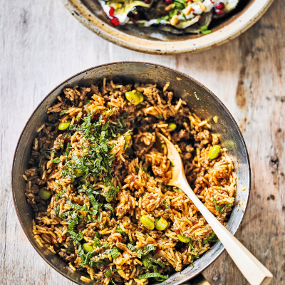

Lamb Pilaf

Basmati rice is a store-cupboard staple and this spicy lamb pilaf with harissa, edamame beans, and spices takes just 15 minutes to make and 30 minutes to cook.
Ingredients:
- 1 white onion
- 2 cloves garlic
- Extra virgin olive oil
- 100g Rose Harissa
- 3 Fresh chillis
- 4 tbsp butter
- 1 Cinammon stick
- 3 tbsp cumin
- 300g rice (basmati preferably)
- 170g edamame beans
- 500ml chicken stock
- 500g lamb mince or chunks
- 2tbsp each mint and coriander
Instructions:
- Heat the olive oil in a heavy-based, wide saucepan and add the onion, garlic and chilli. Fry over a medium heat for about 8-10 minutes, stirring often, until soft and light brown. Stir in the lamb and brown all over, making sure any large clumps of meat are broken down.
- Add the butter and, once melted, stir in the harissa, cinnamon stick and cumin. Mix in the rice. Add the hot stock, soya beans and barberries, and bring to the boil, then reduce the heat to low, cover tightly and cook for around 15-20 minutes, until the rice is tender.
- Remove from the heat and, without removing the lid, leave to rest for another 15 minutes.
- Fluff up the rice mixture with a fork, garnish with the chopped herbs and serve immediately. Delicious with the roast aubergines with tahini yogurt dressing on the side.
Source here